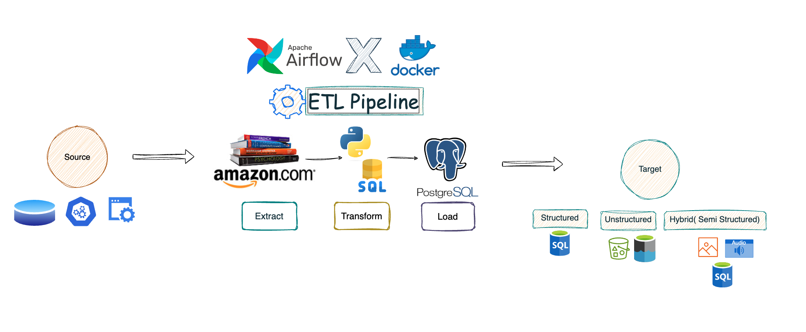

Featured Projects
Daily Automated ETL Pipeline with Apache Airflow & PostgreSQL
Designed and deployed a daily automated ETL pipeline that leverages Apache Airflow to orchestrate the ingestion and processing of Amazon book metadata...
View on GitHub
Real-Time ETL Pipeline with Apache Kafka & AWS
Designed and deployed an end-to-end ETL pipeline to simulate near real-time streaming data generation using Python...

View on GitHub
Predicting Health Insurance Charges
Built a linear regression model to predict individual health insurance charges...
View on GitHub
Sentiment Analysis on Amazon Alexa Reviews
Performed sentiment analysis on customer reviews of Amazon’s Alexa products...

View on GitHub
Food Image Classification Using CNN
Built and trained a Convolutional Neural Network (CNN) model using TensorFlow/Keras...
View on GitHub
Forecasting Energy Consumption and Prices
Conducted a research project during my Master’s program focused on forecasting hourly energy consumption and prices...
View Project Details